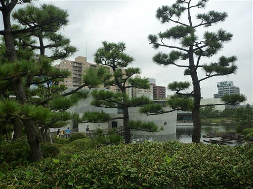
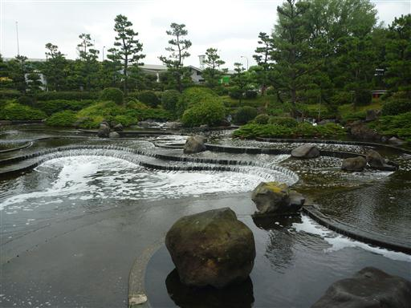
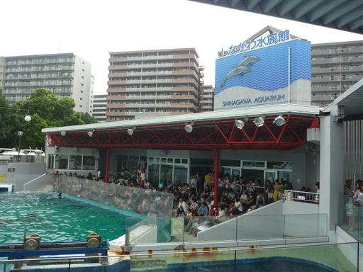
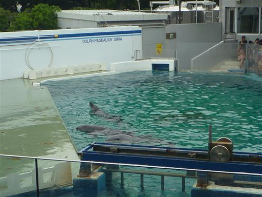
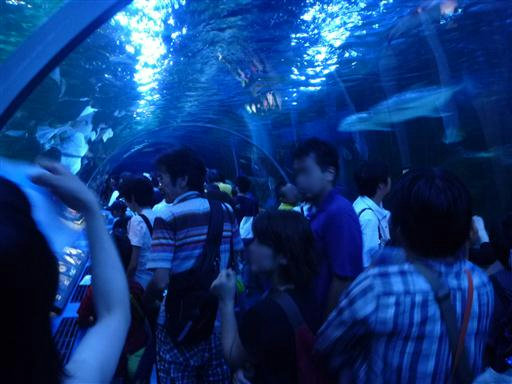
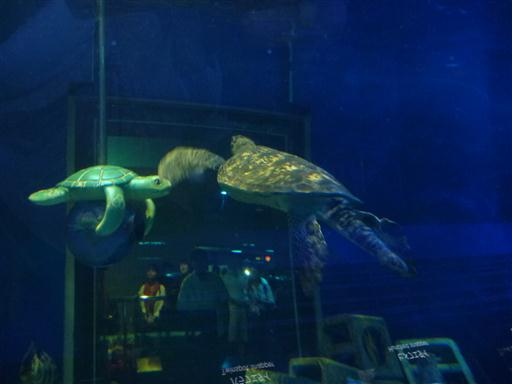
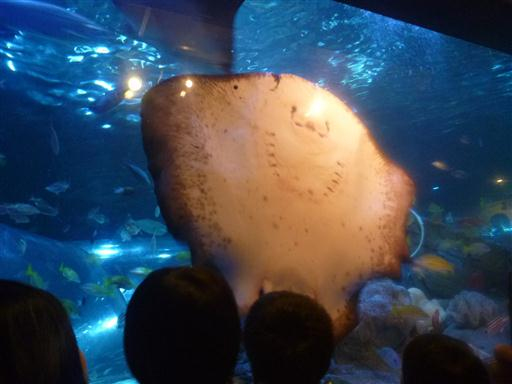
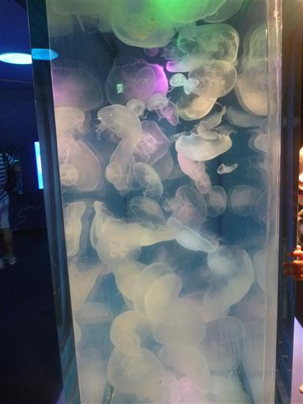

しながわ水族館
| 日付 | 2013年8月25日（日） |
|---|---|
| メンバー | 家族（妻、長女・2歳、長男・0歳） |
| アクセス | 車 |
本日は雨予報なので、水族館に行くことにする。
しながわ水族館、江ノ島水族館、油壷マリンパークなどを調べたが
無難に家から近いしながわ水族館を選択する。
開園30分前に水族館に到着。駐車場は半分程度埋まっていた。
駐車場は狭いので開園時間には一杯になっているだろう。
予報通り小雨がぱらつく天気だ。

水族館前は庭園風に整備されていて、水が流れ落ちているが
泡だらけであまり美しい風景とは言えない。

10時になって入園し、しばらく水槽を眺めた後イルカのショーを見ることにする。
ショーの20分前でもほぼ満席だ。立地条件が良い水族館だけに人の数は非常に多い。

ショーではイルカがボールを弾いたり、ジャンプを披露したりしていた。
娘は水しぶきの音が怖いのか、ずっと後ろを向いていた…

館内最大のトンネル水槽。水槽が湾曲しているため魚の大きさがよく分からない。

大きなウミガメ。左が偽物、右が本物だ。

水中ショー。ダイバーのお姉さんが水槽に入ると大きなエイがやってきて水槽に張り付いた。
そこで解説のお姉さんがエイの説明を始める。
エイって演技をすることができるのか、と少し感動。

クラゲの水槽。色のついた光を当てられているため非常にきれいだ。
裏側に回って写真撮影できるようになっている。
水族館自体の規模は小さく、かなり混雑もしていたが
便利な場所にあり、区営で比較的安いため
子供を楽しませるにはなかなか良い水族館だった。

他の記録